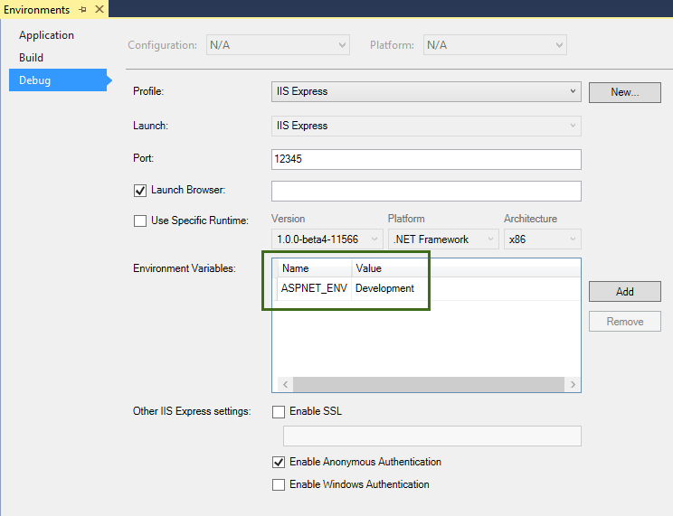

Working with Multiple Environments¶
By Steve Smith
ASP.NET 5 introduces improved support for controlling application behavior across multiple environments, such as development, staging, and production. Environment variables are used to indicate which environment the application is running in, allowing the app to be configured appropriately.
- In this article:
Browse or download samples on GitHub.
Development, Staging, Production¶
ASP.NET 5 references a particular environment variable, ASPNET_ENV, to describe the environment the application is currently running in. This variable can be set to any value you like, but three values are used by convention: Development, Staging, and Production. You will find these values used in the samples and templates provided with ASP.NET 5.
The current environment setting can be detected programmatically from within ASP.NET 5. In addition, ASP.NET MVC 6 introduces an Environment Tag Helper that allows MVC Views to include certain sections based on the current application environment.
Note
The specified environment name is case insensitive. Whether you set the variable to Development or development or DEVELOPMENT the results will be the same.
Development¶
This should be the environment used when developing an application. When using Visual Studio 2015, this setting can be specified in your project’s debug profiles, such as for IIS Express, shown here:
When you modify the default settings created with the project, your changes are persisted in launchSettings.json in the Properties folder. After modifying the ASPNET_ENV variable in the web profile to be set to Staging, the launchSettings.js file in our sample project is shown below:
{
"profiles": {
"IIS Express": {
"commandName": "IISExpress",
"launchBrowser": true,
"environmentVariables": {
"ASPNET_ENV": "Development"
}
},
"web": {
"commandName": "web",
"environmentVariables": {
"ASPNET_ENV": "Staging"
}
}
}
}
Note
Changes made to project profiles or to launchSettings.json directly will not take effect until the web server being used is restarted.
Staging¶
By convention, a Staging environment is a pre-production environment used for final testing before deployment to production. Ideally, its physical characteristics should mirror that of production, so that any issues that may arise in production occur first in the staging environment, where they can be addressed without impact to users.
Production¶
The Production environment is the environment in which the application runs when it is live and being used by end users. This environment should be configured to maximize security, performance, and application robustness. Some common settings that a production environment might have that would differ from development include:
- Turn on caching
- Ensure all client-side resources are bundled, minified, and potentially served from a CDN
- Turn off diagnostic ErrorPages
- Turn on friendly error pages
- Enable production logging and monitoring (e.g. AppInsights)
This is by no means meant to be a complete list. It’s best to avoid scattering environment checks in many parts of your application. Instead, the recommended approach is to perform such checks within the application’s Startup class(es) wherever possible
Determining the environment at runtime¶
The IHostingEnvironment service provides the core abstraction for working with environments. This service is provided by the ASP.NET hosting layer, and can be injected into your startup logic via |stub-icon| Dependency Injection. The ASP.NET 5 web site template in Visual Studio uses this approach to load environment-specific configuration files (if present) and to customize the app’s error handling settings. In both cases, this behavior is achieved by referring to the currently specified environment by calling EnvironmentName or IsEnvironment on the instance of IHostingEnvironment passed into the appropriate method.
If you need to check whether the application is running in a particular environment, use env.IsEnvironment("environmentname") since it will correctly ignore case (instead of checking if env.EnvironmentName == "Development" for example).
For example, you can use the following code in you Configure method to setup environment specific error handling:
1 2 3 4 5 6 7 8 9 10 11 12 | if (env.IsDevelopment())
{
app.UseBrowserLink();
app.UseDeveloperExceptionPage();
app.UseDatabaseErrorPage(DatabaseErrorPageOptions.ShowAll);
}
else
{
// Add Error handling middleware which catches all application specific errors and
// sends the request to the following path or controller action.
app.UseExceptionHandler("/Home/Error");
}
|
If the app is running in a Development environment, then it enables BrowserLink and error pages (which typically should not be run in production). Otherwise, if the app is not running in a development environment, a standard error handling page is configured to be displayed in response to any unhandled exceptions.
Startup conventions¶
ASP.NET 5 supports a convention-based approach to configuring an application’s startup based on the current environment. You can also programmatically control how your application behaves according to which environment it is in, allowing you to create and manage your own conventions.
When an ASP.NET 5 application starts, the Startup class is used to bootstrap the application, load its configuration settings, etc. (learn more about ASP.NET startup). However, if a class exists named Startup{EnvironmentName}, e.g. StartupDevelopment, and the ASPNET_ENV environment variable matches that name, then that Startup class is used instead. Thus, you could configure Startup for development, but have a separate StartupProduction that would be used when the app is run in production. Or vice versa.
The following StartupDevelopment file from this article’s sample project is run when the application is set to run in a Development environment:
1 2 3 4 5 6 7 8 9 10 11 12 | using Microsoft.AspNet.Builder;
namespace Environments
{
public class StartupDevelopment
{
public void Configure(IApplicationBuilder app)
{
app.UseWelcomePage();
}
}
}
|
Run the application in development, and a welcome screen is displayed. The sample also includes a StartupStaging class:
1 2 3 4 5 6 7 8 9 10 11 12 13 14 15 16 17 | using Microsoft.AspNet.Builder;
using Microsoft.AspNet.Http;
namespace Environments
{
public class StartupStaging
{
public async void Configure(IApplicationBuilder app)
{
app.Run(async context =>
{
context.Response.ContentType = "text/plain";
await context.Response.WriteAsync("Staging environment.");
});
}
}
}
|
When the application is run with ASPNET_ENV set to Staging, this Startup class is used, and the application will simply display a string stating it’s running in a staging environment. The application’s default Startup class will only run when the environment is not set to either Development or Staging (presumably, this would be when it is set to Production, but you’re not limited to only these three options. Also note that if no environment is set, the default Startup will run).
In addition to using an entirely separate Startup class based on the current environment, you can also make adjustments to how the application is configured within a Startup class. The Configure() and ConfigureServices() methods support environment-specific versions similar to the Startup class itself, of the form Configure[Environment]() and Configure[Environment]Services(). If you define a method ConfigureDevelopment() it will be called instead of Configure() when the environment is set to development. Likewise, ConfigureDevelopmentServices() would be called instead of ConfigureServices() in the same environment.
Summary¶
ASP.NET 5 provides a number of features and conventions that allow developers to easily control how their applications behave in different environments. When publishing an application from development to staging to production, environment variables set appropriately for the environment allow for optimization of the application for debugging, testing, or production use, as appropriate.